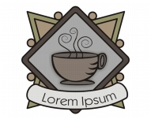
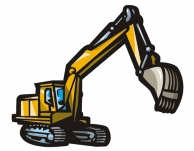

|

Подробный логотип |

Картинка |
|
Изображение низкого качества |

Изображение высокого качества |
Быстрые ссылки на процедуры, описанные на этой странице:
• |
• |
• |
С помощью команды «Быстрая трассировка» трассировку растрового изображения можно выполнить в один прием. Или же можно выбрать подходящий метод трассировки и заготовку стиля, а затем с помощью элементов управления PowerTRACE просмотреть и настроить результаты трассировки. CorelDRAW предлагает два метода трассировки растровых изображений: трассировка по центральной линии и трассировка абрисом.
При выборе трассировки по центральной линии используются замкнутые и незамкнутые кривые без заливки (мазки); этот метод подходит для трассировки технических иллюстраций, карт, штриховых рисунков и подписей. Этот метод называется также «трассировкой обводки».
Метод трассировки по центральной линии был использован для преобразования исходного растрового изображения (вверху) в векторную графику (внизу).
При выборе трассировки методом абриса используются объекты кривой без абрисов; этот метод подходит для трассировки картинок, логотипов и фотографий. Метод трассировки абрисом также называется «трассировка с заливкой» или «трассировка контуров».
Готовый стиль представляет собой набор параметров, соответствующих определенному типу растрового изображения, трассировку которого необходимо выполнить (например, штриховой рисунок или фотоизображение высокого качества). Для каждого метода трассировки имеются определенные готовые стили.
Для трассировки по центральной линии можно использовать две заготовки стиля: одна используется для технических иллюстраций, другая — для штриховых рисунков.
Для метода трассировки абрисом можно использовать следующие готовые стили, которые подходят для штриховых рисунков, логотипов, картинок и фотографий.
Результаты трассировки можно настроить с помощью элементов управления в диалоговом окне PowerTRACE. Для получения дополнительных сведений см. разделы Точная настройка результатов трассировки и Настройка цветов в результатах трассировки.
| Трассировка растрового изображения с помощью команды «Быстрая трассировка» |
1. |
Выделите растровое изображение.
|
2. |
Выберите Растровые изображения |
Трассировку растрового изображения можно также выполнить в
один прием, нажав выпадающее меню Трассировать растровое
изображение на панели свойств и выбрав Быстрая трассировка.
|
Можно изменить параметры, используемые при выборе команды
«Быстрая трассировка». Для получения дополнительных сведений
см. раздел Настройка параметров трассировки по умолчанию.
|
| Трассировка растрового изображения с помощью метода трассировки по центральной линии |
1. |
Выделите растровое изображение.
|
2. |
Выберите Растровые изображения |
• |
Технические иллюстрации: трассировка черно-белых иллюстраций,
выполненных тонкими нечеткими линиями.
|
• |
Штриховой рисунок: трассировка черно-белых эскизов, выполненных
жирными четкими линиями.
|
При необходимости результаты трассировки можно настроить с помощью элементов управления в диалоговом окне PowerTRACE. |
PowerTRACE можно также открыть с помощью выпадающего меню
Трассировать растровое изображение на панели свойств.
|
| Трассировка растрового изображения с помощью метода трассировки абрисом |
1. |
Выделите растровое изображение.
|
2. |
Выберите Растровые изображения |
• |
Штриховой рисунок: позволяет выполнять трассировку черно-белых
эскизов и иллюстраций.
|
• |
Логотип: позволяет выполнять трассировку простых логотипов с
низкой степенью детализации и небольшим количеством цветов.
|
• |
Подробный логотип: позволяет выполнять трассировку логотипов с
подробной детализацией и большим количеством цветов.
|
• |
Картинки: позволяет выполнять трассировку готовой графики с разной
степенью детализации и количеством цветов.
|
• |
Изображение низкого качества: позволяет выполнять трассировку
фотографий с низкой детализацией (или фотографий, детали которых
желательно проигнорировать).
|
• |
Изображение высокого качества: позволяет выполнять трассировку
фотографий высокого качества с высокой детализацией.
|
При необходимости результаты трассировки можно настроить с помощью элементов управления в диалоговом окне PowerTRACE. |
Copyright 2012 Corel Corporation. Все права защищены.